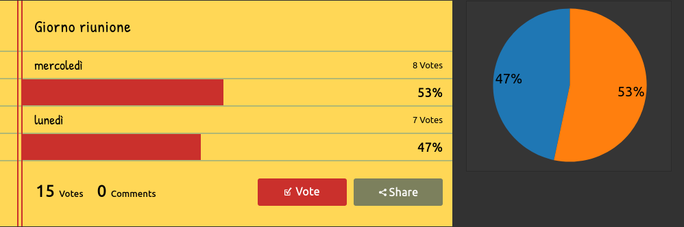
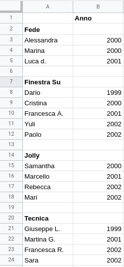
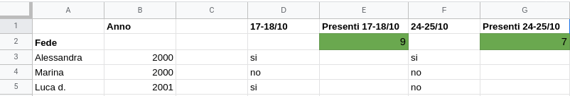
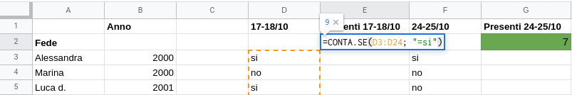

“Quanti siamo a riunione?” 🤔️
Quante volte a settimana un membro del Clan si fa questa domanda? Quante volte rileggerà i messaggi inviati sul gruppo di Whatsapp per farsi un’idea? Dopo aver letto questo articolo, la scolta o il rover in questione potranno anche dimenticare queste spiacevoli situazioni!
Poche opzioni? Usa un sondaggio! 📊️
Si sa, le decisioni importanti si prendono a riunione, ma quelle piccole invece? Magari non c’è stato tempo, o si tratta di un dubbio sorto dopo la riunione. La soluzione più diretta? Mandare un messaggio e aspettare il responso delle altre persone. Ma i messaggi si perdono facilmente di vista, e ricontare ogni volta gli esiti dell’indagine è scomodo. Usa un sondaggio!
Servizi come strawpoll.me o strawpoll.com permettono di creare sondaggi molto facilmente: basta condividere il link ai diretti interessati e il gioco è fatto. Attenzione però: assicuratevi che non ci siano troppi pochi voti (o troppi!).

In difficoltà? Considera i fogli di calcolo! 📔️
Purtroppo, non sempre basta un sondaggio per risolvere un problema… Ma potrebbe bastare un foglio di calcolo! Certo, ne esistono di vari tipi (Microsoft Excel, LibreOffice Calc…) ma i concetti alla base sono sempre gli stessi. Per questa (mini)guida utilizzerò Google Docs, in quanto è il programma più facile a cui accedere (basta solo un account Google).
Un foglio di calcolo è esattamente quello che sembra: una tabella! Essa è divisa in righe e colonne, ogni riga è identificata da un numero, e ogni colonna da una lettera. Una casella può assumere molti valori diversi, ma a noi interessano solo stringhe e numeri. Una stirnga è esattamente quello che sembra: una sequenza di caratteri! Aperto il vostro foglio di calcolo, un’idea potrebbe essere quella di associare ad ogni riga ogni membro del clan.

Facile no? Ora hai un metodo veloce per associare ad una persona un qualsiasi dato: in questo esempio l’anno di appartenenza è disposto a destra della persona.
I fogli di cui stiamo discutendo si chiamano di calcolo per un motivo: possono contare al posto nostro! Attraverso delle funzioni possiamo far assumere a delle caselle dei valori calcolati in base ai valori trovati nel foglio. Suona complicato? È più semplice di quello che sembra.

Notate una cosa? A ogni riga è associato un valore! Ad esempio, in questa immagine a ogni persona è associato un valore, “si” o “no” per indiare la presenza in un fine settimana per un eventuale pernotto. Nelle caselle verdi è riportato il numero di persone presenti in totale: questo numero viene calcolato automaticamente, in base ai valori associati ad ogni persona. Se andiamo a esaminare il contenuto di una casella verde…

…possiamo vedere com’è stato calcolato il valore! Scrivendo =CONTA.SE(D3:D24; "=si") all’interno della casella si sta comunicando al programma di contare tutte le occorrenze del valore si nella selezione di caselle che va da D3 a D24. Questo era solo un esempio, ma ci sono un sacco di funzioni da utilizzare, sentitevi liberi di esplorare il catalogo delle operazioni possibili e utilizzarle a vostro piacimento!
Consiglio: potete usare questa tecnica anche per tenere traccia di cose come il fondocassa, o il numero di calendari venduti.